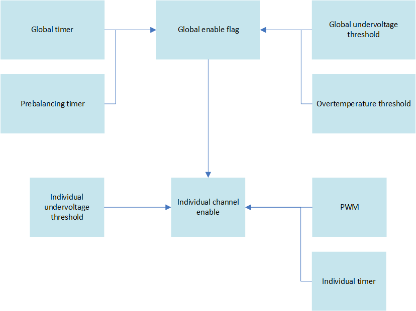

4.30.7. NXP MC33775A
4.30.7.1. Description
The MC33775A monitoring IC can monitor 4 to 14 cells, with +/- 5V voltage. It has 8 GPIOs. GPIO 4 and 5 can be used for I2C communication. GPIO 1 can be used as alarm line.
The communication with the MC33775A can be made directly via SPI or through a differential line. This type of communication is called TPL. To translate SPI communication to TPL communication, a bridge IC is used, called MC33664.
In SPI mode, only 1 MC33775A can communicate with the MCU. In TPL mode, the MCU can communicate with up to 62 MC33775A in daisy-chain.
4.30.7.2. Daisy-chain
4.30.7.2.1. Wake-up
A device wakes up when there is any communication on the TPL bus. In addition, there is a WAKE-UP command that can be sent. When an enumerated device receives a WAKE-UP command, it automatically transmits an additional WAKE-UP message to the next device. When an unenumerated device receives a WAKE-UP command, it automatically sends two additional WAKE-UP messages to the next devices.
As a consequence, sending two WAKE-UP commands (separated by the wake-up delay) allows waking up the entire daisy-chain. In the case of enumerated devices, it works as follows:
The MCU sends the first WAKE-UP command (WU0)
IC0 is woken up by WU0
The MCU sends a second WAKE-UP command WU1
IC0 gets WU1 and forwards it to IC1, as IC0 is enumerated
IC1 is woken up by WU1
IC0 automatically transmits a second WAKE-UP command (WU2)
IC1 gets WU2 and forwards it to IC2, as IC1 is enumerated
IC2 is woken up by WU2
IC2 automatically transmits a third WAKE-UP command (WU3)
The process goes on until the whole daisy-chain is woken-up
For an unenumerated daisy-chain, it works as follows:
The MCU sends the first WAKE-UP command (WU0)
IC0 is woken up by WU0
The MCU sends a second WAKE-UP command WU1
IC0 gets WU1 checks it
IC0 sends WU1_1 to IC1
IC1 wakes up
IC0 sends WU1_2 to IC1
IC1 checks WU1_2
IC1 sends WU2_1 to IC2
IC2 wakes up
IC1 sends WU2_2 to IC2
IC2 checks WU2_2
IC2 sends WU3_1 to IC3
IC3 wakes up
IC1 sends WU3_2 to IC3
IC3 checks WU3_2
The process goes on until the whole daisy-chain is woken-up
4.30.7.2.2. Addressing of slaves
In daisy-chain mode, every MC33775A has its own address. The MC33775A starts unenumerated, which means its address is 0 and it does not forward messages.
To enumerate an MC33775A, a write command must be sent to the daisy-chain, to
write the address of the device in the SYS_COM_CFG register. For the first MC33775A,
1 must be written in the address field: due to the use of 0 to
represent an unenumerated device, the addresses start at 1. The bus forwarding must be enabled, too,
by writing 1 to bit 9. After this procedure, the first MC33775A is then enumerated.
Once a MC33775A is enumerated, it forwards all messages in both directions. For the second MC33775A, the configuration message with 2 in the address field must be sent to the daisy-chain. As this address in the configuration message does not match the address of the first MC33775A, it is ignored and simply forwarded. The second MC33775A then receives the configuration message and becomes enumerated. The MCU must then repeat the enumeration procedure for each unenumerated MC33775A in the daisy-chain, by sending the configuration message for address setup and forward enabling.
When all the ICs in the daisy-chain are enumerated and forwarding is enabled, the communication between the MCU and the daisy-chain works as follows:
when the MCU sends a message to the daisy-chain, it is received by IC(0). IC(0) forwards it to IC(1). IC(1) forwards it to IC(2) and soon until the last IC in the daisy-chain receives the message. As each message contains the address of the IC that is addressed by the MCU, this addressed IC knows it has to interpret the message and not only forward it.
When IC(n) sends a message to the MCU (e.g., response to a voltage measurement request), it sends it to IC(n-1). IC(n-1) forwards it to IC(n-2) and so on until IC(0) forwards it to the MCU
This means that when communicating with the daisy-chain, the MCU does not see a shift register. It sees single devices to which it sends messages and which answer.
4.30.7.2.3. TPL
TPL is the name of the differential communication protocol used by the MC33775A ICs to communicate in daisy-chain. A bridge IC called MC33664 is used to make the translation between SPI and TPL, so that the MCU only sees SPI communications. The MC33664 has one important specificity: it uses two SPI interfaces to communicate with the MCU, one Tx SPI and one Rx SPI. The SPI interfaces are configured as follows:
The Tx SPI is used by the MCU as a master to send messages to the daisy-chain
The Rx SPI is used by the MCU as a slave to receive answers from the daisy-chain
4.30.7.3. Message format
There are 4 types of message:
WAKE-UP/NOP
READ register from MC33775A
WRITE register to MC33775A
RESPONSE of MC33775A to READ message
A RESPONSE message is received after a READ command was issued. In TPL mode, there is no response to WRITE message.
The following fields compose messages and are common to all types of messages:
CMD: command type, chooses one of the four command types described above.
MADD: indicates upstream of downstream direction of message. Must be set to 0 by the MCU when sending messages to the daisy-chain.
CADD: daisy-chain address. Cannot be 0.
DEVADD: device address. 0 is for enumerated devices. For enumerated devices, the MCU sets this value to the address of the device it wants to communicate with and in RESPONSE messages, contains the address of the device that responded.
MSGCNT: message counter, is incremented for each response message sent by a MC33775A IC. Is ignored in other messages. The counter is reset when the device goes to sleep.
DATLEN: number of register addressed, can be 1 to 4. With one message, up to 4 consecutive register can be read from or written to. If DATLEN is higher then the length of the provided data, the communication is discarded.
REGADD: address of the first addressed register.
The next fields are related to data and depend on the type of messages. For WRITE and RESPONSE messages, DATA contains the data to write for WRITE or the data sent by the device for RESPONSE.
For READ messages:
PAD: padding. If set to 1, the response message always correspond to a RESPLEN of 4. If RESPLEN < 4 was used, the remaining values are padded with zeros.
RESPLEN: number of messages to be transferred in one RESPONSE frame, can be 1 to 4. RESPLEN greater than number of registers to transfer?
NUMREG: total number of register requested. If NUMREG is not a multiple of RESPLEN, the device sends in the last message only the remaining registers. If PAD is set to 0, the length of the last message is adapted. If PAD is set to 1, the remaining values are padded with zeros.
The last field is the CRC value.
4.30.7.4. Writing values to registers
The WRITE message must be used. In the message, the address of the device, the address of the register and the data to write must simply be supplied.
The following data must be written.
First the message head:
0x10 in CMD
0 in MADD
CADD value
device address in DEVADD. Care must be taken, the first device in the daisy-chain has the address 1.
As MSGCNT is not used, it can be set to 0.
Then the data segment starts, first with the data head:
Message length in DATLEN. A length of 1 corresponds to 0 for DATLEN.
Address of first consecutive register in REGADD.
Then the data of the data segment:
Data to write.
Finally the CRC:
CRC value computed over the whole message.
In TPL mode, the daisy-chain does not respond to WRITE commands.
4.30.7.5. Reading values from registers
4.30.7.5.1. Issuing a read command
First, a READ command must be used. In the message, the address of the device and the address of the first consecutive register to read must e supplied.
The following data must be written.
First the message head:
0x01 in CMD
0 in MADD
CADD value
device address in DEVADD. Care must be taken, the first device in the daisy-chain has the address 1.
As MSGCNT is not used, it can be set to 0.
Then the data segment starts, first with the data head:
Message length in DATLEN. A length of 1 corresponds to 0 for DATLEN.
Address of first consecutive register in REGADD.
Then the data read configuration part of the data segment:
Five bits must be written with 0.
PAD must be set to 0 or 1.
Response length in RESPLEN. A length of 1 corresponds to 0 in RESPLEN.
Number of registers to read in NUMREG.
Finally the CRC:
CRC value computed over the whole message.
4.30.7.5.2. Response from the daisy-chain
After a READ message was sent to a device in the daisy-chain, via the Tx SPI, the device answers via the Rx SPI.
Different checks in a RESPONSE frame can be made to determine if the READ command was performed successfully:
the length of the received message must be greater than zero.
the device address in RESPONSE messages must match the device address used in the WRITE message.
the register address in each received RESPONSE message must correspond to the register address written in the WRITE command. Care must be taken that one WRITE message can lead to several RESPONSE messages, so the value of the first register written in the WRITE COMMAND has to be incremented for each RESPONSE message received.
the message counter MSGCNT can be checked, it is incremented at each response message. It is reset when the device goes to sleep.
If the register address of a RESPONSE frame contains 0x3FFF, this means there was an access error.
The CMD field in a respond message must be set to 0x11.
In addition, the FEH_COM_FLT_STAT register (Communication fault status register, address 0x423)
can be read. It signals communication errors that happened and contains a communication error counter.
4.30.7.6. Voltage measurement
The MC33775A can measure the following values:
14 cell voltages
4 + 4 voltages on analog inputs that can also be used as GPIOs
voltage of the battery module
diagnostic measurements like voltage references and internal IC temperature
The analog inputs can be used to measure temperature by using NTCs in a voltage dividers, supplied by the output VAUX.
The MC33775A has two independent measurements chains, primary and secondary.
Primary can measure:
the 14 cell voltages
the 4 first analog inputs (AIN0 to AIN3)
internal primary IC temperature
various voltage references, not the same as secondary
Secondary can measure:
the 14 cell voltages
the 4 last analog inputs (AIN4 to AIN7)
internal secondary IC temperature
various voltage references, not the same as primary
The first step is to activate measurements. The IC then continuously measures. When one of the 4 modes described above is started, the measurements are captured. At least 16 measurements are necessary for the IC to give valid values.
4.30.7.6.1. Measurement types
4 different types of measurement are available:
synchronous
application-driven
periodic
fast VB
4.30.7.6.1.1. Synchronous
In this mode, the cell voltages are measured synchronously between primary and secondary. Only the inputs common to primary and secondary (cell voltages) are taken into account, the other inputs (analog inputs, module voltage, internal temperature, voltage references) not.
4.30.7.6.1.2. Application-driven
In this mode, the application decides when the capture starts. The measurements are taken into account after the IC receives a capture command via setting bits in the appropriate register. All sources can be measured. Results are available as soon as at least 16 measurements have been taken into account. This is signaled by a bit in the appropriate register.
A new capture can be initiated when at least 16 values have been taken into account. If more than 65535 or less than 16 measurements have been captured, the results are set to invalid.
4.30.7.6.1.3. Periodic
The number of measurements to use is defined in the appropriate register. Once this mode is started, the results are available every time the number of measurements captured corresponding to the configured period has been made. The availability of the results of a period are signaled by a bit in the appropriate register.
4.30.7.6.1.4. Fast VB
Measurements are made on the secondary line. The results are available after 24 measurements have been captured.
4.30.7.6.1.5. Measurement possibilities for primary and secondary
The following table sums up which inputs can be measured by primary and secondary and with which method.
Measurement sources and measurement types |
|||||
|---|---|---|---|---|---|
Synchronous |
Application |
Periodic |
Fast VB |
||
Primary |
VC0 to VC13 |
X |
X |
X |
|
AIN0 to AIN3 |
X |
X |
|||
Module voltage |
X |
X |
|||
Primary refs |
X |
||||
Secondary |
VB0 to VB13 |
X |
X |
||
AIN4 to AIN7 |
X |
X |
|||
Secondary refs, Current |
X |
||||
4.30.7.7. Procedure to perform voltage measurements
- Writing to the
ALLMregister is equivalent to writing simultaneously to the corresponding PRMM(primary) andSECM(secondary register).
4.30.7.7.1. Measurement unit activation
First, the measurement units must be activated:
Enable cell measurement channels by writing ones to the VCBCxEN fields in the
ALLM_VCVB_CFGregister (address 0x1408).
ALLM_VCVB_CFG←0x3FFFEnable AIN0 to AIN 3 and module voltage channels by writing ones to the AINx fields in the
PRMM_AIN_CFGregister (address 0x1809).
PRMM_AIN_CFG←0x1FEnable AIN4 to AIN 7 channels by writing ones to the AINx fields in the
SECM_AIN_CFGregister (address 0x1C09).
PRMM_AIN_CFG←0x0FEnable the measurements units simultaneously by setting bit 0 to 1 in the
ALLM_CFGregister (address 0x1400).
ALLM_CFGregister ←0x01
Once the measurement units have been activated, measurement captures can be started.
4.30.7.7.2. Application-driven measurements
Enable capture by setting the bits 0 to 9 corresponding the the different channels (cell inputs, analog inputs, module voltage) to 1 (corresponding to a value of 0x1FF) in the
ALLM_APP_CTRLregister (address 0x1401). Also write 0x1F to bits 14:10 to disable open load detection for secondary. Writing a number between 0 to 13 would activate open load detection for the corresponding cell measurement input.
ALLM_APP_CTRL← (0x1F<<10) |0x3FFIn the
PRMM_MEAS_STATregister (address 0x183E), the status of the primary measurements can be checked. If at least 16 measurements have been captured, the corresponding bit for each of the 6 measurement possibilities is set to 1:
cell inputs VC0 to VC13 - bit 0
analog inputs AIN0 to AIN3 - bit 1 to bit 4
module voltage - bit 5
In the
PRMM_APP_VC_CNT register(address 0x183F), the number of captured values for the cell input measurements can be read. Starting from address 0x1840, the results of the measurements can be read, with one value per register, in the following order:
cell inputs VC0 to VC13
module voltage.
analog inputs AIN0 to AIN3
Starting from address 0x1C4F, the results of the secondary measurements can be read, with one value per register, in the order analog inputs AIN4 to AIN7.
4.30.7.7.3. Periodic measurements
Set the number of measurements used for each period by writing the corresponding value to the
ALLM_PER_CTRLregister (address 0x1402) at bits 0 to 8 (PERLEN). The number must lie between 16 and 511.
ALLM_PER_CTRL←0x10for 16 measurementsIn the
PRMM_MEAS_STATregister (address 0x183E), the status of the periodic measurements can be checked. If new periodic data is ready for readout, bit 8 (PERRDY) is set to 1.The number of the cycle in which the results have been created can be read in the
PRMM_PER_NUMregister (address 0x185F). Starting from address 0x1860, the results of the measurements can be read, with one value per register, in the following order:
cell inputs VC0 to VC13
module voltage.
analog inputs AIN0 to AIN3
Starting from address 0x1C6E, the results of the secondary measurements can be read, with one value per register, in the order analog inputs AIN4 to AIN7.
4.30.7.7.4. Synchronous measurements
Enable capture by setting the bit 0 (SYNCCYC) to 1 in the ALLM_SYNC_CTRL register (address 0x1403). Also write 0x1F to bits 14:10 to disable open load detection for secondary. Writing a number between 0 to 13 would activate open load detection for the corresponding cell measurement input.
ALLM_SYNC_CTRL← (0x1F<<10) |0x01In the
PRMM_MEAS_STATregister (address 0x183E), the status of the synchronous measurements can be checked. If synchronous data is ready for readout, bit 9 (SYNCRDY) is set to 1.The number of the cycle in which the results have been created can be read in the
PRMM_SYNC_NUMregister (address 0x187F). Starting from address 0x1880, the results of the measurements can be read, with one value per register, in the order cell inputs VC0 to VC13
4.30.7.8. Balancing
The following figure sums up the different switches for balancing.
Fig. 4.11 Balancing switches
Balancing can be controlled by different means:
Global timer: all balancing stops when it reaches 0
Channel timer: the corresponding channel stops balancing when the timer reaches 0
Global undervoltage: all balancing stops when one cell reaches this value
Channel undervoltage: the corresponding channel stops balancing when its voltage reaches the limit
Pre-balancing timer: if set to no zero, balancing only starts when it has reached zero
PWM: modulates balancing for each channels
Temperature-controlled balancing: two temperature limits are defined, measured with analog inputs. When the high limit is reached, all balancing stops. It starts again when the low limit is reached.
There are three prerequisites for balancing to start:
In the BAL_GLOB_TO_TMR register (address 0x1001), the global timer TOTIME must be set to a non-zero value.
In the BAL_PRE_TMR register (address 0x1003), the pre-balancing timer must be set to 0 to balance immediately
In the BAL_GLOB_CFG register (address 0x1000), the global balancing enable flag BALEN must be set to 1.
BAL_GLOB_TO_TMR←0xYYYYwith YYYY>0 and high enoughSet all individual channels to values high enough
BAL_PRE_TMR←0x00
BAL_GLOB←0x01
Once this is done, setting bits CHEN0-CHEN13 to 1 in the BAL_CH_CFG register (address 0x1002) activates the corresponding balancing channel.
4.30.7.9. I2C
The MC33775A can act as a I2C master, by using GPIO4 and GPIO5 as SCL and SDA. The I2C configuration is made in the I2C_CFG register (address 0xC00). Bit 0 enables the I2C interface. Bit 1 select the clock rate (100 or 400 kHz)
Register I2C_DATA0 (address 0xC04) to I2C_DATA6 (address 0xC0A) contains the data transmitted or received, depending on the form of the transmission.
The transmission is started by writing to the I2C_CTRL register (address 0xC01):
bits 3:0 (START) control how many bytes are transmitted after the START condition, including device address
bit 4 (STOP) determines if a stop condition is sent after the last transmitted bytes
bits 11:8 (RDAFTER) determines after how many bytes the master switches to read
Data to be sent must be written in the registers I2C_DATA0 to I2C_DATA6 before the transmission starts. Data received must be read in the registers I2C_DATA0 to I2C_DATA6 after the transmission.
In the I2C_STAT register (address 0xC02), the status of the transmission can be polled. Bit 1 (ACTIVE) states that a transmission is ongoing. TO check is the ongoing transmission is finished, the register must be polled until the value 0 is read for the ACTIVE bit.
Three wrapper functions have been added:
N775_I2cRead()
N775_I2cWrite()
N775_I2cWriteRead()
They are similar to the functions used by the MCU, except that the communication takes place over the I2C bus of the MC33775A. They take care of writing to and reading from the registers described above.
When they are called, they write in the queue ftsk_afeToI2cQueue that an I2C transaction
must take place and the calling task is blocked. It waits for the queue ftsk_afeFromI2cQueue
to be filled with one element.
For a write operation, the data to write on the bus is written to the queue ftsk_afeToI2cQueue, too.
Elements of the type AFE_I2C_QUEUE_s are used for the communication with the queue.
In each measurement cycle of the MC33775A, the function N775_TransmitI2c() is called once and reads
the queue ftsk_afeToI2cQueue. If a transaction must take place, it is executed.
The outcome of the transaction (success or fail) is written to the queue ftsk_afeFromI2cQueue.
If data was read, the read data is written to the queue ftsk_afeFromI2cQueue, too.
The calling function is then unblocked. If it does not get feedback in the queue within
N775_I2C_FINISHED_TIMEOUT_ms, the transaction is considered to have failed.
4.30.7.10. GPIOs
The GPIOs are driven by two configuration registers and two control registers.
The GPIO_CFG0 register (address 0x800) is the first control register. Bits 7:0 (INPEN0 to INPEN7) enable the inputs for the pins. Bits 15:8 (OUTEN0 to OUTEN7) enable the outputs for the pins.
The GPIO_CFG1 register (address 0x801) is the second control register. Bits 7:0 (ODEN0 to ODEN7) allows enabling the open-drain for each pin.
The GPIO_OUT register (address 0x802) is the first control register. Bits 7:0 (OUT0 to OUT7) set the output levels of the pins.
The GPIO_IN register (address 0x803) is the second control register. Reading bits 7:0 (IN0 to IN7) gives the level of the GPIO pins. Reading bits 15:8 (HIGHDET0 to HIGHDET7) indicate if a high level was present on the pin since the last READ command.